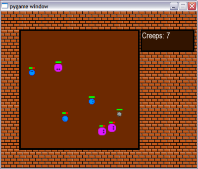
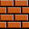

This is part II of the "Writing a game in Python with Pygame" tutorial.
Welcome back
In the first part of this tutorial we've created a simple simulation of "Creeps" - round creatures moving around the screen and bouncing off walls. Not much of a game there, but a good start nonetheless.
In this part, we are going to extend this simulation, making it much more game-like. It is not the final step, of course. The final product of this part is still going to be far from a real, interesting game, but many useful game programming concepts will be introduced, and the simulation will definitely have much more feeling of a game in it.
Here's a teaser screenshot of the final product of this part:
The code
The full code for this part can be downloaded from here. As before, it is highly recommended to download it, run it and have it open in the editor while reading this tutorial.
Goals for this part
In this part I'm going to cover:
- A prettier background for the game
- Responding to user events
- A more complex internal state for the creeps
- Simple animation
- Rendering text
So let's get started.
Background
In the first part we've just splashed a bucket of greenish swamp-like color onto the screen and called that a background. Since we want the game to be a bit more appealing, this won't do any longer.
We'll now tile a pretty background image onto the screen, and create a bounded "game field" for the creeps to roam in.
What is tiling, you ask? Tiling, in simple terms, is taking a small surface and repeating it in a pattern until a larger surface is covered. In our case, we'll take this image:
And tile it in a simple repeating-row pattern. The code doing it is in the draw_background function:
def draw_background(screen, tile_img, field_rect):
img_rect = tile_img.get_rect()
nrows = int(screen.get_height() / img_rect.height) + 1
ncols = int(screen.get_width() / img_rect.width) + 1
for y in range(nrows):
for x in range(ncols):
img_rect.topleft = (x * img_rect.width,
y * img_rect.height)
screen.blit(tile_img, img_rect)
field_color = (109, 41, 1)
draw_rimmed_box(screen, field_rect, field_color, 4, Color('black'))
The loop does the tiling. The last line of the function creates the playing field - a dark-brown filled rectangle to which the creeps will be restricted. The field is drawn using the utility function draw_rimmed_box - it's very simple, and you can study it on your own [1].
In the game screenshot above you can also see another box with some text on the right. This is drawn separately, and we'll get to it soon enough.
Hey, you've clicked me!
So far the only user event our game has responded to was closing closing the game window. Not much interaction there, so we'll pump it up. Here's the new event handler in our main loop:
for event in pygame.event.get():
if event.type == pygame.QUIT:
exit_game()
elif event.type == pygame.KEYDOWN:
if event.key == pygame.K_SPACE:
paused = not paused
elif ( event.type == pygame.MOUSEBUTTONDOWN and
pygame.mouse.get_pressed()[0]):
for creep in creeps:
creep.mouse_click_event(pygame.mouse.get_pos())
A couple of things were added. First, there's a handler for the user's pressing the space key on the keyboard. This flips the "paused" state of the game - try it now.
The second handler is only slightly more complex. When a left mouse button is clicked inside the application, each creep gets its mouse_click_event method called with the mouse click coordinates.
The idea is simple: creeps have health, and we can decrease their health by successfully clicking on them. A health bar is drawn above each creep showing its health as a proportion of red to green (click on some creeps to see their health decrease).
The implementation is also quite simple. Here's the mouse click handler of a creep:
def mouse_click_event(self, pos):
""" The mouse was clicked in pos.
"""
if self._point_is_inside(vec2d(pos)):
self._decrease_health(3)
You see that when the click was found to be inside the creep, its health is decreased. Let's see how the click inside the creep is detected:
def _point_is_inside(self, point):
""" Is the point (given as a vec2d) inside our creep's
body?
"""
img_point = point - vec2d(
int(self.pos.x - self.image_w / 2),
int(self.pos.y - self.image_h / 2))
try:
pix = self.image.get_at(img_point)
return pix[3] > 0
except IndexError:
return False
This method detects if the click is inside the creep. More specifically, inside the solid area of the creep's image. Clicking inside the creep's bounding box but outside its body won't result in True. Here's how it's done:
First, the click point is recomputed to be relatively to the creep's image. If the point isn't inside its image on the screen, there's nothing to talk about. If it is inside, we still don't know if it's in the solid region. For this purpose, the pixel at the point of the click is examined. If the alpha constituent of the point is positive, this is part of the creep's body. Otherwise, it's just part of its bounding box but outside the body (see [2]).
Drawing the health bars is very simple, and you should be able to understand the code of the draw method (which replaces blitme from the code of part I) that implements this.
Simple animation
What happens when the creep's health goes down to 0? I hope you've already experimented with the game and saw it, but if you didn't, here's a screenshot:
If you've played with the game, however, you've surely noticed that the explosion the creep undergoes is animated - it's changing with time.
What is an animation? In its simplest form, it is a sequence of images that are drawn one after another in the same location, creating the appearance of movement. It's not unlike our creeps moving on the screen (you can see the whole game as an animation, really), but for the sake of this part I'm specifically referring to a static animation that stays in the same place.
The animation is implemented in the module simpleanimation.py which you can find in the downloaded code package. You can experiment with it by running it standalone (the module uses Python's if __name__ == "__main__" feature to allow stand-alone running).
The code should be very simple to understand, because there's nothing much to it. The SimpleAnimation class receives a list of image objects and draws them to the screen with the given period and duration. Note how the explosion is simulated by taking the same image, rotating it by 90 degrees and using SimpleAnimation to change the two in rapid succession.
Back in creeps.py, our creep uses SimpleAnimation to show its own explosion after its health has reached 0:
def _explode(self):
""" Starts the explosion animation that ends the Creep's
life.
"""
self.state = Creep.EXPLODING
pos = ( self.pos.x - self.explosion_images[0].get_width() / 2,
self.pos.y - self.explosion_images[0].get_height() / 2)
self.explode_animation = SimpleAnimation(
self.screen, pos, self.explosion_images,
100, 300)
It's very straightforward, really.
Creep state
The creeps of this part are much more complex than of part I. They have health which can decrease, and they can explode and disappear. To manage this complexity, we're going to use a state machine [3].
What states can the creep be in? A normal state, when the creep is roaming around, an exploding state in which the creep is replaced by the explosion animation, and an inactive state, in which the creep no longer functions. These are coded as follows:
(ALIVE, EXPLODING, DEAD) = range(3)
See the code of update for state management - the creep is updated differently, depending on which state it's in. The same is true for the draw method. It's a good idea now to search for self.state throughout the code, taking note of where the state is modified, and where it is used.
Displaying textual information
When you run the game (or in the large screenshot at the top of this part), you'll see a simple scoreboard in the top right corner of the screen. It counts the amount of active creeps on the screen, and will also display an exciting message when you've killed all the creeps.
This display is implemented in the function draw_messageboard - study its code now, it should be quite simple to understand in conjunction with the docs.
Sprites and sprite Groups
I hope you've noticed that in both parts of the tutorial, the Creep class derives from pygame.sprite.Sprite. Sprite is a utility class of Pygame that implements some useful common methods for managing the animated images that represent the actors of the game (known in game programming jargon as sprites).
In the first part I didn't use any of its capabilities at all. Here, I'm using its capability of being collected into sprite Groups.
The list of creeps in the main function has now turned into a sprite group. The cool thing is that whenever a sprite is added to a group, it keeps track of which groups it's in, so calling self.kill() in a sprite causes it to be removed from all the groups and thus from the game. The update method of Creep calls kill() when the explosion has ended. This way, the main loop doesn't have to explicitly keep track of which sprites are active in the group - they do it themselves.
That said, I'm still not sure I'm going to use the full capabilities of Sprites. For me, they're just a guideline, not a must. Perhaps I'll find out later that my code can be structured better with them. Or perhaps I'll see I don't need them at all. We'll see [4].
Wrapping up
All the goals stated in the beginning of this part were achieved, so that's it, for now. We've turned the simplistic creeps simulation into something resembling a rudimentary game. True, it's more likely to pave your way to severe RSI than cause you any serious fun, but it's a simple game nonetheless. Not bad for just 450 lines of Python code!
In future parts of this tutorial, we'll continue developing the code on our way to a real game, so stay tuned. Oh, and give the exercises a go, I guarantee you they will make your understanding of the material much deeper.

Exercises
- Try to pause the game (press SPACE), click a couple of times on a creep, and resume the game. Notice that the creep's health decreased? Try to fix this, i.e. block mouse events during the pause.
- Can you see that when a creep is facing diagonally, his health bar is a bit farther from his body than when he's facing up or to the side? Can you figure out why? (Hint: re-read the section of part I dealing with the size of the rotated image). Propose ways to fix this.
- Review the code of the _explode method. Note the complex computation of the explosion's position. Why is it needed? Try to modify it (for example, removing the consideration of the explosion image's size) and observe the difference.
- Add a running clock to the scoreboard. It should begin at 00:00 and advance by 1 each second. When the game ends, the clock should stop.
- Set the creeps' speed to higher than the default and attempt to catch them. It's quite challenging!
| [1] | Note also the usage of the Color module to specify color. This is a useful PyGame module, and I've changed almost all the hard-coded color references in the code to named colors. |
| [2] | The images of creeps are stored in PNG files that support alpha transparency. If you examine the image with an image editor that supports transparency (Paint.NET or GIMP, for example), you'll see that the area outside the creep's round body is transparent. This is used to blend the creep in a pleasing way into its background, and can also be employed to detect what's inside and what's outside of the creeps's body. |
| [3] | I assume you know what a state machine is, and if you don't, Wikipedia and Google are your friends. |
| [4] | To learn more about Pygame sprites, read this tutorial. |